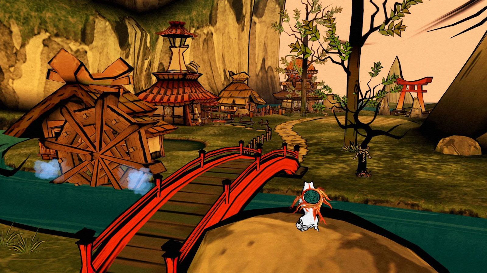
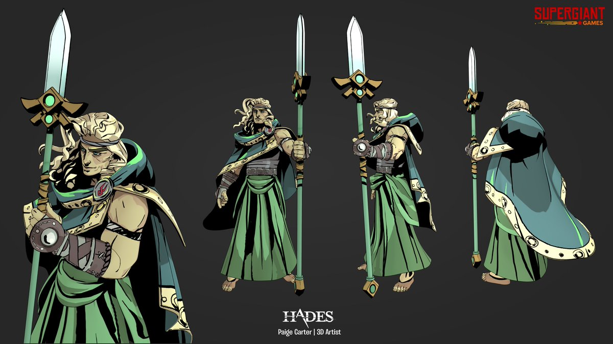
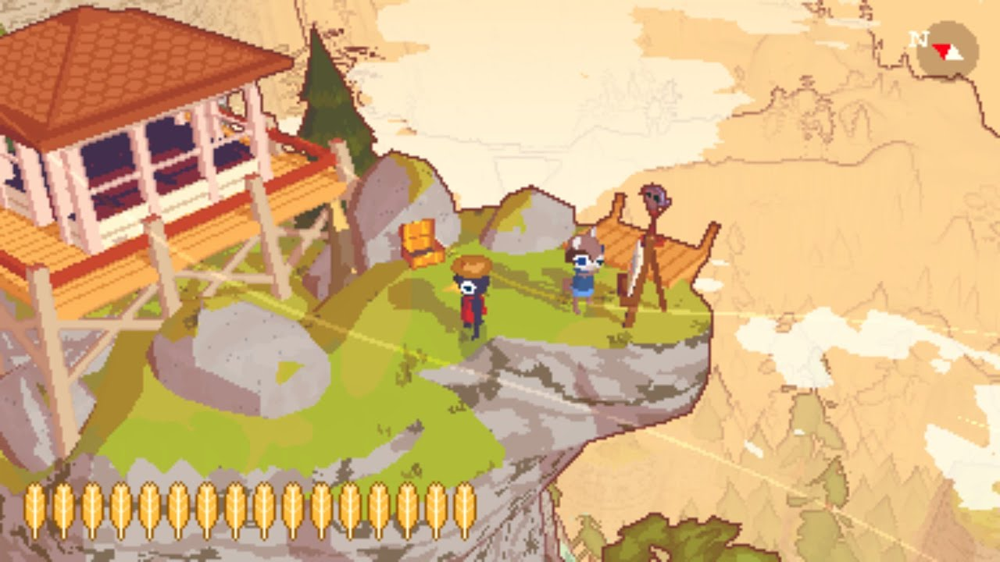

ToonTown Cel Central
We’re building the most epic cel shader to effectively replicate 2D “cartoon” aesthetics. We’ll use color banding, specular lighting, rim lighting, and outline weight to approximate toon shading through an interactive GUI.
Team Members
Shannon Bonet, Ace Chen, Isabel Li, Bailey Segall
Problem Description
Cel shading, or toon shading, is a type of non-photorealistic rendering which allows 3D computer graphics to appear 2D through the stylistic application of limited shading colors rather than shade gradients or tints and shades. This style can be expressive for animation or video game rendering styles; for example, popular games like Legend of Zelda: Breath of the Wild and Genshin Impact use cel (or cel-like) shading. However, it can also be difficult to achieve a complete and consistent flat “cartoon” effect. Some challenges may include how, when cel shading is implemented without smoothing, the jagged details of the 3D mesh can become too visually apparent for a convincing 2D style, or how improper choices of banding thresholds may not effectively illustrate the 3D shape to the viewer. We also have not encountered many complex web-based cel shaders.
For our project, we intend to build a web-based cel shader which can apply consistent and effective 2D-like styles to 3D meshes. To produce a visually appealing style which can hopefully avoid some of the challenges above, we intend to produce an interactive GUI system in which parameters such as color, banding, and specular lighting can be customized to produce the ideal aesthetic. Having implemented this, we also may extend to additional features, such as parameter presets which when clicked can apply a variation of appealing pre-defined cel shaders. In terms of technologies used to build the shader, we will be exploring Three.js, React Three Fiber, and GLSL (WebGL).
Goal and Deliverables
- Our goal is to create a cel shader using a web framework (Three.js or React Three Fiber) to render visually interesting and appealing images. We also plan to implement an interactive interface to manipulate parameters of the shader like color, banding, specular lighting, and outline weight.
- To measure the success of our system, we want to be able to render images that give the appearance of the same aesthetic across different models. To better define what a visually appealing aesthetic means, we want to ensure limited jaggies/artifacts and consistency across renders. We also want to be able to apply cel shading to a variety of models (or really any model). Finally, we want to do this with reasonable efficiency so that the user can feasibly interact with the shader GUI without much delay. In this project, one question we want to answer is learning how shaders work on the web to expand on what we’ve been learning in class.
- In our shader, we plan to implement diffuse lighting, the cel shading itself, specular highlights, rim lighting, and outlining. As a set of stretch goals, we would also like to add bump mapping to show detail, selectable presets for parameter settings, and weighted outlining to mimic lineweight.
Schedule
- 4/9 – 4/15
- Set up web framework (Three.js or React)
- Implement custom shader
- Lighting model
- Diffuse + Blinn Phong Shading
- 4/16 – 4/22
- Implement cel-shading – essentially specify cutoff pointon dot product value
- Implement smooth falloff – intermediate smoothing to make the cels less harsh
- Specular and rim lighting
- Outlining
- 4/23 – 4/29
- 4/25 milestone: Cel shading complete, only working on stretch goals
- Stretch goals
- Weighted outlining
- Can also add bump mapping for making detail visible
- Add clickable pre-sets
- 4/30 – 5/3 Presentation, 5/4 Final Deliverable
Resources
- Three.js : Open source JS library, abstracts WebGL complexity into easier AP
- React Three Fiber [potentially]: React renderer for Three.js – it’s newer and less documented online. Question to staff: has anyone worked with this before and had success?
Inspiration
|
okami

|
painterly textures + cel shading
sumi-ink style rendering
heavy on the outlines
uses interesting line weight
|
|
hades

|
cel shading
black for shadow regions
minimal banding |
|
hike

|
pixelated, esp edges
cel shading
selective outlining (edge of scene)
|